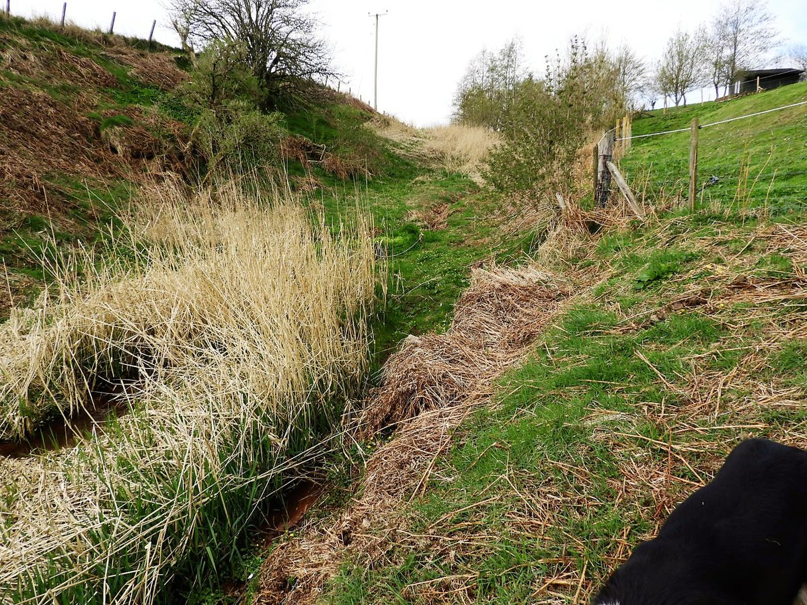

Fyvie · Aberdeenshire · SSSI
One hundred acres, held in common.
A wildlife sanctuary on the quartzite gravels of an ancient river-bed, looked after by the community that lives around it.
Fyvie · Aberdeenshire · SSSI
A wildlife sanctuary on the quartzite gravels of an ancient river-bed, looked after by the community that lives around it.
What we do
Woodhead and Windyhills Community Trust is a voluntary body representing the interests of the local community. Founded in 2003, the Trust preserves 100 acres of woodland to explore and respect. The woodlands contain a Site of Special Scientific Interest.
Our goal is to promote opportunities to engage with and experience the natural setting. The area is designated an SSSI because of the underlying quartzite gravels from an ancient river-bed.
Three ways in

The woodland is open to explore. Information boards at the entrances explain what you are standing on and what lives here.

Decades of recording, covering spiders, mammals, birds, moths, hoverflies and other insects, trees, mosses, grasses and fungi.

The work is done by volunteers. There is always something that needs mending, planting, counting or clearing.